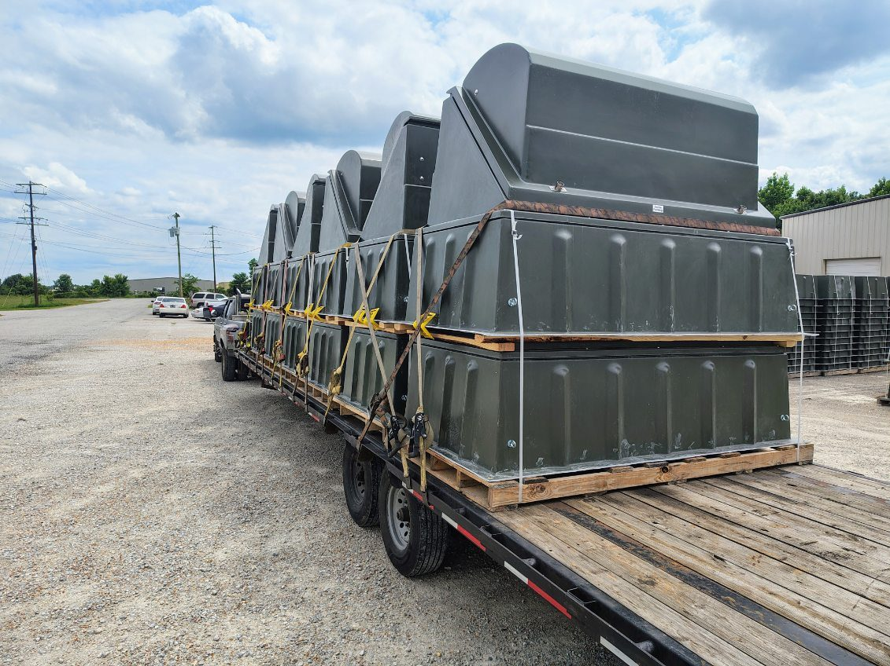

Florida issues oversize/overweight permits through FDOT. A load is permitted once it exceeds 8'6" wide, 13'6" tall, or 80,000 lbs gross. Single-trip permits cover most moves; escorts scale with width, travel is daylight-only with holiday curfews, and hurricane season adds routing and evacuation-window considerations.
Florida runs a heavy flow of oversized freight — construction equipment, modular structures, boats, and port cargo moving up the peninsula. Here's how the state permits it and the seasonal wrinkle that catches out-of-state shippers.
What needs a permit
A load is legal in Florida up to 8'6" wide, 13'6" tall, and 80,000 lbs gross, with length governed by trailer and route. Note Florida holds the eastern 13'6" height limit — a foot lower than Texas or California — so a load that ran legal-height out west can need a permit the moment it enters Florida. Cross any limit and you need an FDOT permit for state roads, plus local permits for city and county roads.

How permits issue
Florida oversize/overweight permits run through the FDOT Permit Office and its online permitting system. Single-trip permits cover one load on one route; blanket/annual permits serve carriers running repeat oversized freight within set limits. The permit ties to your exact dimensions and weight, and overweight loads must satisfy Florida's axle and bridge-formula limits.
Escorts and curfews
Escort vehicles scale with width — front and/or rear pilot cars past certain widths, with a lead height-pole car for over-height loads and police escorts for the largest. Oversized travel is generally daylight-only, with curfews through the Miami, Orlando, Tampa, and Jacksonville metros during peak hours and restrictions around major holidays.
The seasonal catch: hurricane season
Florida's Atlantic hurricane season (roughly June through November) is a real planning factor for oversized freight. Storms can close routes, and during declared emergencies the state prioritizes evacuation traffic — oversized moves get held. If your move window lands in season, build in schedule cushion and confirm the route isn't under a weather hold before dispatch.
Superloads and corridors
Extreme loads route as superloads with engineered review. Most Florida oversized freight runs the I-4, I-10, I-75, and I-95 corridors and the Turnpike connecting the ports, the metros, and the routes out of state.
Bottom line
- Florida legal limits: 8'6" wide, 13'6" tall, 80,000 lbs gross — height is often the trigger.
- FDOT issues the state permit; cities and counties permit their own roads.
- Escorts scale with width; daylight-only with metro and holiday curfews.
- Hurricane season can close routes and hold oversized moves — plan schedule cushion.
We handle FDOT permitting, routing, escorts, and weather-window planning as part of every Florida move — see heavy haul transport or send your load and route for a quote.